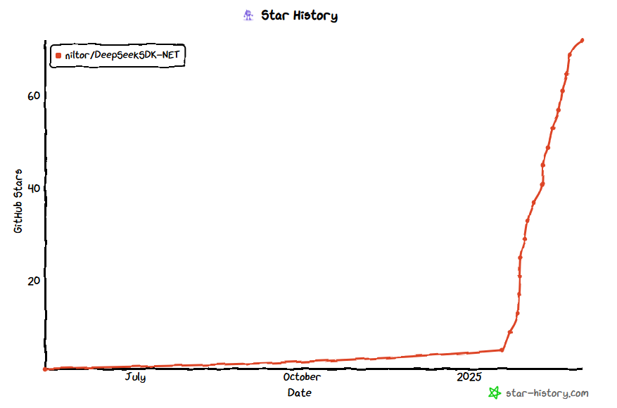

DeepSeek API的使用经验分享
DeepSeek在最近几个月可谓是风头无两，在各种场合谈到大语言模型时，它总会随着OpenAI一起被提及。作为一个开发者和实际的用户，而不是那些为了赚流量博眼球的外行自媒体，我想分享一下作为开发者和实际用户对DeepSeek的一些看法和使用经验。
背景
去年在做ater.dry.cli项目时，就尝试将大语言模型的能力集成到项目中，不过一直没有找到很具体的结合点，当时就尝试对接API，在前端页面以聊天的方式进行交互。然后就选择了DeepSeek API，也就有了后续的DeepSeek.NET SDK开源项目。
为什么选择DeepSeek
大语言模型有很多，而DeepSeek的一些优势让我选择了它：
- 由于网络及其他限制问题，
OpenAI的API作为首要的备选方案，而不是首选方案。 - DeepSeek API服务非常容易获得，只要注册账号即可使用，并且有免费额度，零成本上手。而其他的服务可能 中是作为云服务的其中一部分，申请使用的步骤繁琐复杂。
- 价格非常便宜，可以说是国内最早最便宜提供API服务的提供商之一。
- 效果达标，这是所有的前提，如果效果不好，其他都是浮云。
- 不限并发(很大的优势)。
Note
早期V1版本，会遇到一些问题，如要求返回Json时，偶尔会出现格式错误的情况。不过这个问题在后续模型中得到缓解，后续版本中也可以明确指定返回Json格式。
DeepSeek.NET SDK
要将DeepSeek API集成到项目中，我们需要通过HTTP请求来调用API，我首先使用了Open AI的C#SDK，当我使用其Stream Chat功能时，会发现DeepSeek流式输出的格式与Open AI的并不一致，而在SDK层面上又无法自定义处理过程，当时Nuget上也没有相应的包，所以我只能自己实现。
第一个版本
第一个版本(v1.0.x)大概在2024年5月份就发布到nuget上了，主要是实现了Chat功能，包括流式的处理，满足自己在项目的使用场景。
包括后续我在帮朋友做一个AI文案改写的功能时，就直接使用了该SDK，也没有做大的改动。
DeepSeek的突然爆火
在2024年底，我在朋友的项目中正在使用DeepSeek API做业务端测试，每天都要花费几十万的token，它的并发优势，在我们的场景中具有独特的优势，大大减少了等待时间。

很快，DeepSeek-R1在春节前发布了，以开源推理模型和低训练成本让DeepSeek短时间内在外网上爆火，我对这种短时间内大量传播的现象向来是不以为意的，它不符合基本的传播规律，都是人为推动的结果。而当时国内正处在春节前期，都在忙着准备过节，倒没多少传播。直到我发现有人在我的github项目中开始提issue，而且还是国外的用户，并且star的数量也在缓慢增加。为了解决相关的问题，我再一次更新了SDK，花了两天多的时间，将DeepSeek API提供的功能，整体都在SDK中实现了，并在后续的版本添加了对ASP.NET Core的支持，并完善和修复了一些问题，并提供了更加详细的使用示例。在春节及后续一段时间，star的数量也开始逐渐增多。

而在Nuget上，由于先发优势，也是下载量最多的DeepSeek SDK包。并且在前些时间，我偶然看到某个微信公众号的文章中，也介绍了我的类库。
爆火背后的问题
DeepSeek-R1的热度在国外也就持续了一周左右的时间，更多国外的用户是拿DeepSeek-R1来dissOpenAI，想让OpenAI推出更强大更便宜的模型。并且DeepSeek很快也就丧失了提供服务的能力，其官方聊天和API都受到了极大的影响，几本处于无法使用的情况。
在春节过后，节前的项目开始出现问题，超时成为了常态。在文案改写的场景中，过去我们仅需要30s就能完成的工作，现在快的时候需要2分钟，慢了时候甚至需要5分钟，已经完全不符合业务需求了，于是我们不得不弃用了DeepSeek API，并开始使用混元以及火山提供的模型。
在国内各种炒作的背景下，对于实际的DeepSeek使用用户来说，其实是非常尴尬的，服务不可用，超时等问题持续了整整一个月的时候，这对于任何一个对外提供API服务的公司来说，其实都是非常致命的。DeepSeek在方面上的表现，实在是有很大的差距。
从最近 DeepSeek官方推出的闲时计费服务上来看，其主要压力还是在于国内的访问上，而不是所谓的黑客攻击。因为黑客攻击是所有服务商都会面临的问题，在后端中，限流，防火墙等安全措施都是基本操作，这不是服务瘫痪的主要原因。
恢复服务
现在，官方服务终于恢复了，具体效果，后续我会再次测试，看看是否能够恢复到之前的水平。
从这一系列的事件中，DeepSeek本身有多少受益，只有他们自己知道，但我们可以看到一些基本的事实：
- DeepSeek的名字响彻全球
- DeepSeek的开源模型被大量使用
- DeepSeek 长达一个月的时间里无法提供正常的服务，其服务的使用者受到严重的影响
- 国外的模型和服务在这一波"冲击"下得到了快速的进步
- 国内有些人借着
Deepseek的热度，充实了自己的钱包
总结
最后，我想从用户的角度分享一下收获和担忧
- DeepSeek的是否能够持续稳定的提供服务
- 一定要对接至少两个大语言模型服务，以备不时之需
- DeepSeek的低价格，不限并发的优势，能够持续下去？现在价格已经随着新模型的使用而上涨
相比其他公司的大量宣传和炒作，包括近期的某XX元宝，DeepSeek一直都是非常低调的，即便在这波DeepSeek热度中，官方也没有做什么宣传或吹嘘，仍然是踏踏实实的做事，发论文，分享技术细节，这才是做事的样子。作为用户，我们希望能够使用到更加智能、稳定、便宜的服务，至于其他的，都是浮云。